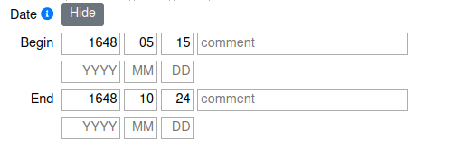

Time Spans¶
This section is focused on how the Date input fields work and how to put in time spans correctly.
Where to find the input fields¶
Date input fields can be found on the following:
It is not provided for the input of:
The Date field itself can be found at the bottom of the form, its input field is initially hidden. It can be used by clicking the Show button.
How to enter dates and time spans¶

The form consists of two parts:
Begin
End
Begin and end each provide two lines for data entry. This can be used for entering precise, known data as well as for tracking time spans.
The following values can be put in: * Year (YYYY) as four digits: -4713 to 9999, the year 0 is not allowed * Month (MM) as two digits: 1 to 12 * Day (DD) as two digits: 1 to 31 * Hour (hh) as two digits: 0 to 23 * Minute (mm) as two digits: 0 to 59 * Seconds (ss) as two digits: 0 to 59 * Comments as free text for additional information
Years before the year 0 can be indicated by a preceding minus. Please note that years before the year 4713 BC (spelling -4713) cannot be entered at the moment due to software restrictions by PostgreSQL. Furthermore, as PostgreSQL uses the Proleptic Gregorian calendar, the year 0 can not be entered either.
Precise dates¶
If precise dates are known, enter the beginning into the first line of Begin and the end date into the first line of End. You can add comments in the comment field. Think of a historic battle with known dates, e.g. the Battle of Hastings which was fought between William Duke of Normandy with his Norman-French troops and King Harold Godwinson and his English army on the 14th of October 1066. To track this dates, fill in 1066 as year, 10 as month and 14 as day for Begin and End alike.

Or think of the Peace of Westphalia as collective name for two peace treaties, signed in 1648 in Osnabrück (15th of May 1648) and Münster (24th of October 1648). The treaties ended the Thirty Years’ War as well as the Eighty Years’ War. To track those dates add 1648 - 05 - 15 into the first row of Begin and 1648 - 10 - 24 into the first row of End.
Time spans¶
If dating is uncertain, time spans for the beginning, end or beginning and end of the time span can be given. This is possible via the four input fields of the date field - 2 for begin and to for end:
The first line represents the beginning of the begin
The second line represents the end of the begin
The third line represents the beginning of the end
The fourth line represents the ending of the end
In the case of unknown start and end dates, the time span must be selected large enough so that the actual time frame lies within the specified span with a 100 % certainty.
Example: The exact date of death of King Stephen I of Hungary is known - 15 August 1038 AD - but for the date of birth only a time span from 01.01.975 AD to 31.12.975 AD can be given. As first input field corresponds to the earliest possible start of the time span, 975 - 01 - 01 should be entered. The second line corresponds to the latest possible end of the time span, in this case 975 - 12 - 31.

Activate hours, minutes, and seconds¶
By default, years, months and days can be entered into the date input field. However, some projects might want to also track hours, minutes, and seconds. Those additional input fields can be activated in your profile. To do so click the gear and go to Profile. Here click Modules. Click on the Edit button and check “Time” to turn it on. You might have to refresh your page for it to show in the form.